FRAMELOOM / TEMPLATE STYLE PROPOSALS
三套真实视频模板，来自同一份分镜。
页面中的视频和关键帧均由 Remotion renderer 实际生成。视频为静音 MP4，不包含旁白或配乐；素材来源见 asset-manifest.json。
archive-grid / STYLE PACK
Archive Grid
档案网格
适合需要保留来源线索的知识和观点视频。纸张横向入场、数字递进，画面保持编辑秩序。
REMOTION / SILENT MP4
关键帧 / 5 SHOTS自动 QA 报告
01
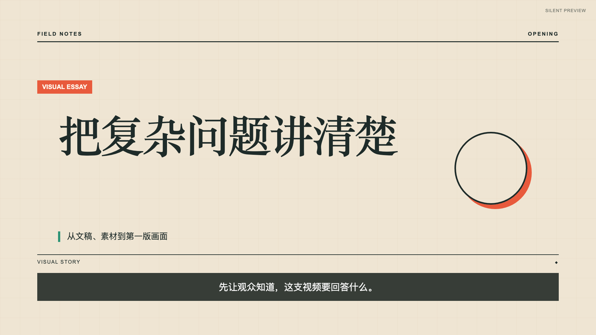
02
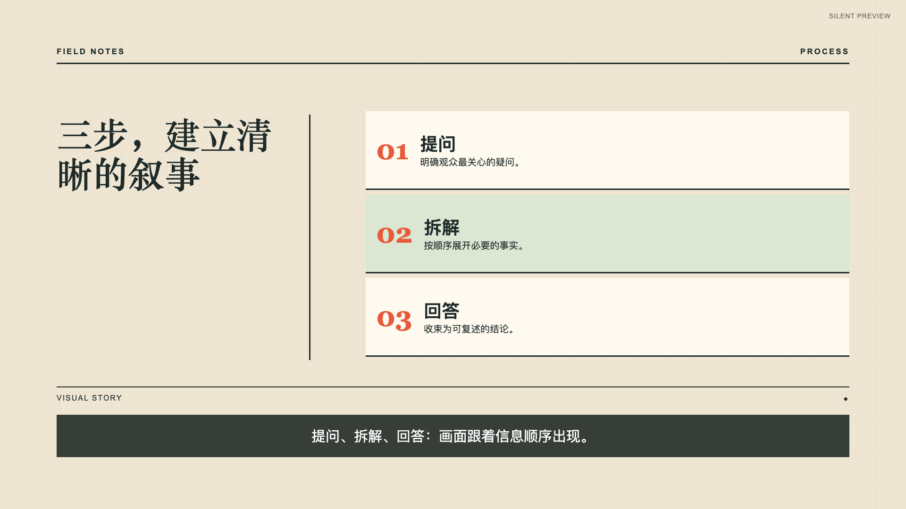
03
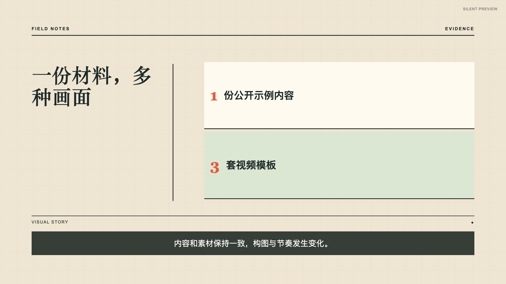
04
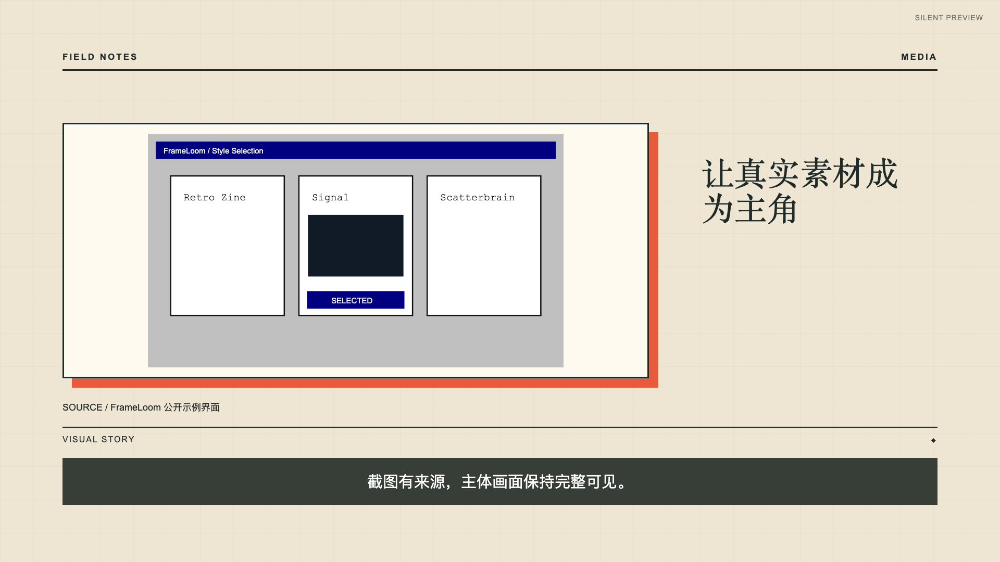
05
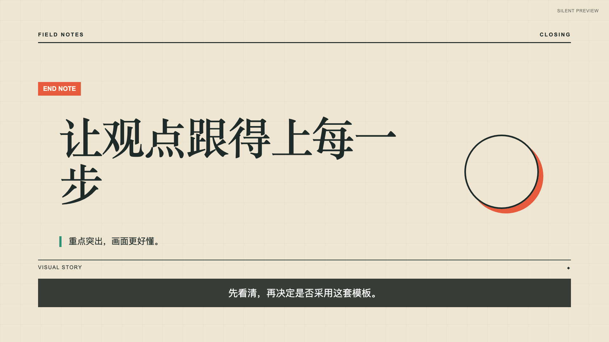
signal-noir / STYLE PACK
Signal Noir
深色结构聚焦
适合产品机制、系统解释和结构化因果。焦点线与节点逐步出现，避免装饰性漂移。
REMOTION / SILENT MP4
关键帧 / 5 SHOTS自动 QA 报告
01
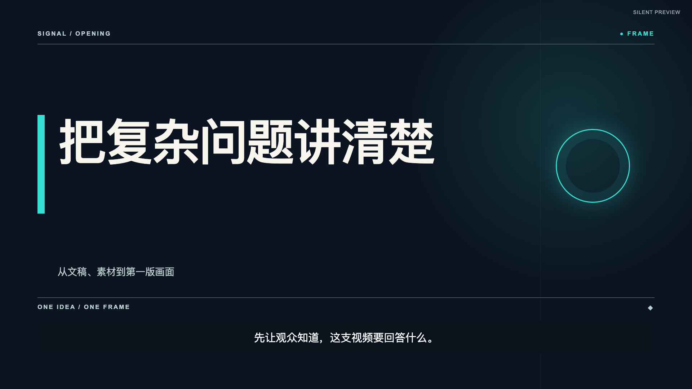
02
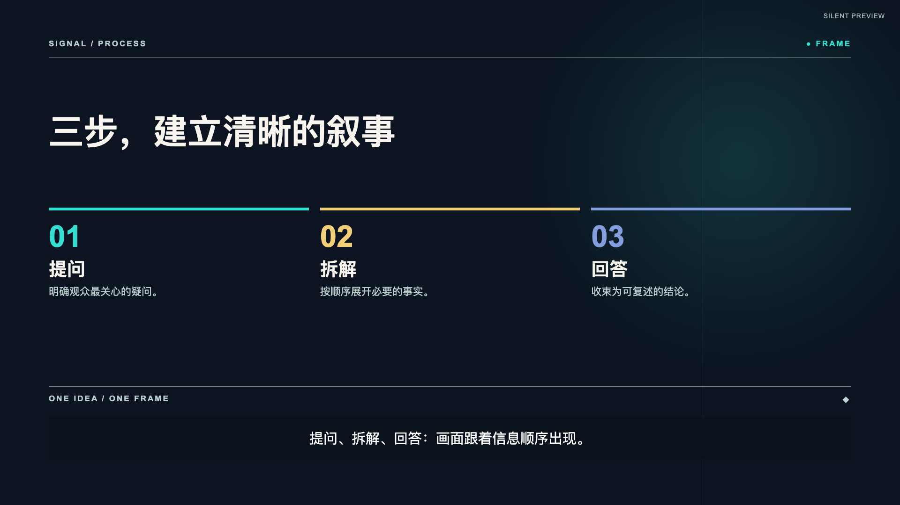
03
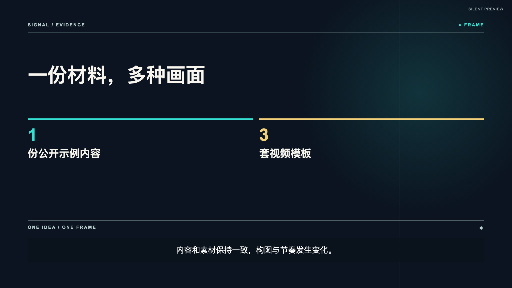
04
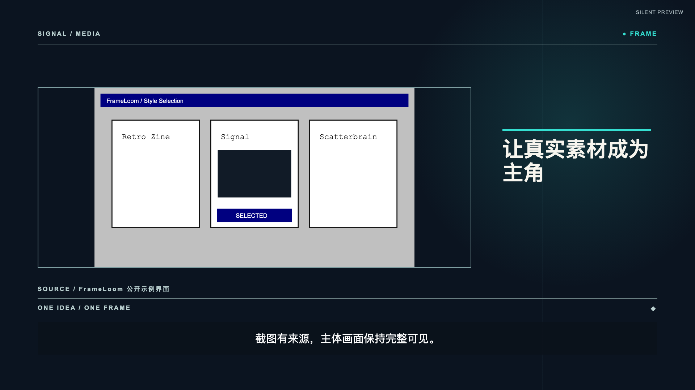
05
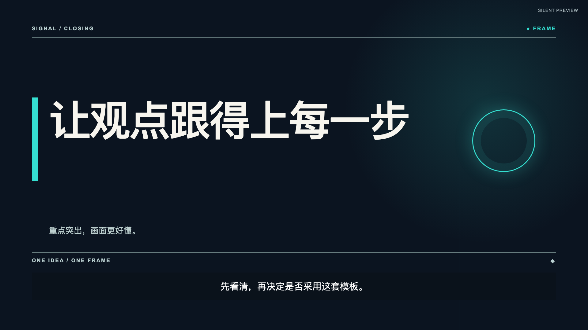
studio-frame / STYLE PACK
Studio Frame
产品工作区
适合产品演示、工作流和输入到输出的过程说明。窗口滑入、列表揭示、进度条推进和状态确认。
REMOTION / SILENT MP4
关键帧 / 5 SHOTS自动 QA 报告
01
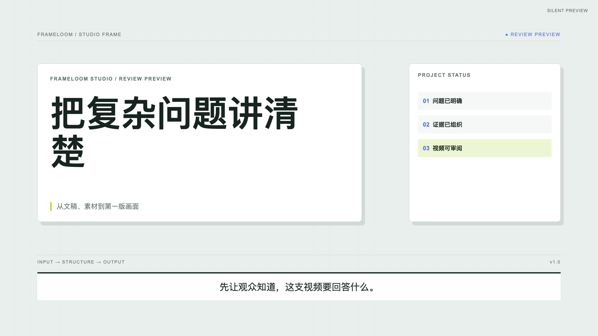
02
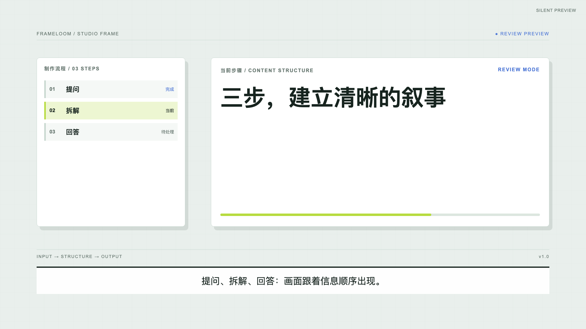
03
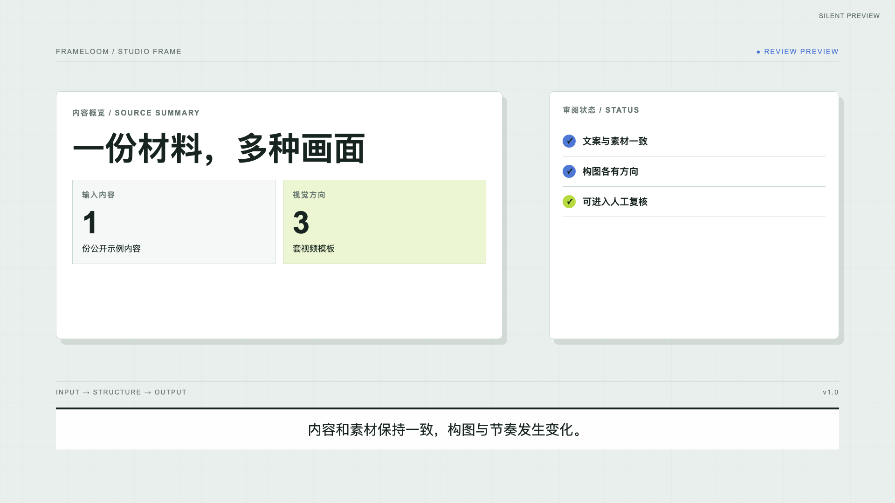
04
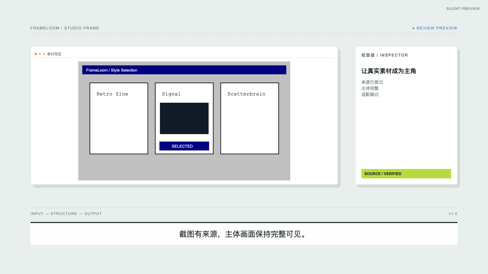
05
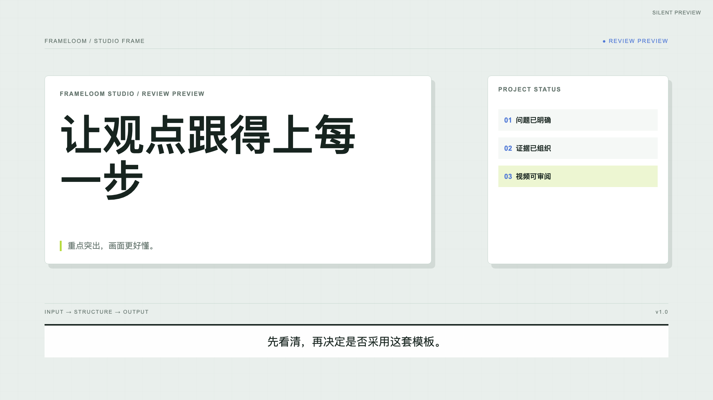